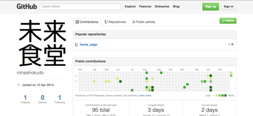

未来食堂は、Gitバージョン管理システム、GitHub（ギットハブ）を用いた運用を開始しました。
飲食店が自店サイトをGit公開アカウントで運用することは、日本初の試みです（※）。
GitHubを使用しWebリソースを公開することで、リソースの閲覧や利用、編集の申請が誰でも可能となります。これは情報の透明性を高めることを狙いとしています。
今後とも継続的にかつ積極的に、情報の透明性を進めて参ります。
これからの取組みもご期待ください。
＜対象リソース＞
自店サイト
http://miraishokudo.com/
＜アカウント＞
未来食堂公式アカウント
http://github.com/miraishokudo

GitHubについて
ソフトウェア開発プロジェクトのための共有ウェブサービスであり、Gitバージョン管理システムを使用したツール。何度も変更を加えたファイルであっても、過去の状態や変更内容を確認したり、変更前の状態を復元することが容易になる。過去や現在の状態を誰でもプログラムレベルで閲覧する事が可能。これにより誰でもプログラムデータ利用や編集要望を行うことが出来る。
GitHub：
http://github.com/※ 公式アカウント開設（2014/04/09）を基準。弊社調べ
以上
＜お問い合わせ先＞
miraishokudo@gmail.com